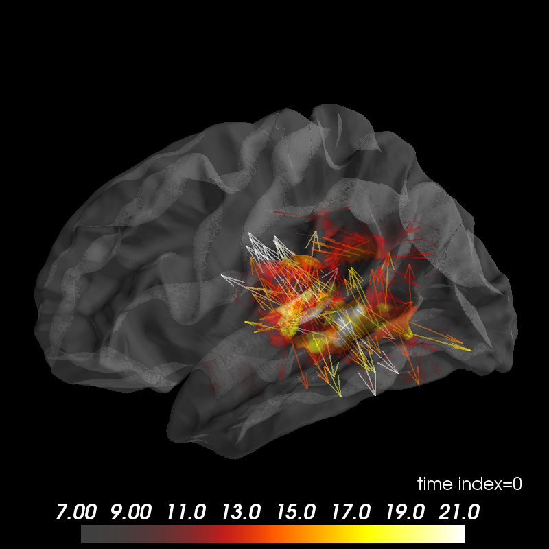

Plot vector-valued MEG inverse solution¶
Data were computed using mne-python (http://martinos.org/mne).
Out:
Updating smoothing matrix, be patient..
Smoothing matrix creation, step 1
Smoothing matrix creation, step 2
Smoothing matrix creation, step 3
Smoothing matrix creation, step 4
Smoothing matrix creation, step 5
colormap: fmin=7.00e+00 fmid=1.40e+01 fmax=2.10e+01 transparent=1
import os
import numpy as np
from surfer import Brain, TimeViewer # noqa, analysis:ignore
from surfer.io import read_stc
print(__doc__)
# Do some basic things: define subject, surface and hemisphere(s) to plot,
# and create the :class:`surfer.viz.Brain` object.
subject_id, surf = 'fsaverage', 'white'
hemi = 'lh'
brain = Brain(subject_id, hemi, surf, size=(800, 800), interaction='terrain',
cortex='0.5', alpha=0.5, show_toolbar=True)
# Read the MNE dSPM inverse solution
hemi = 'lh'
stc_fname = os.path.join('example_data', 'meg_source_estimate-' +
hemi + '.stc')
stc = read_stc(stc_fname)
# data and vertices for which the data is defined
data = stc['data']
vertices = stc['vertices']
time = np.linspace(stc['tmin'], stc['tmin'] + data.shape[1] * stc['tstep'],
data.shape[1], endpoint=False)
# MNE will soon add the option for a "full" inverse to be computed and stored.
# In the meantime, we can get the equivalent for our data based on the
# surface normals:
data_full = brain.geo['lh'].nn[vertices][..., np.newaxis] * data[:, np.newaxis]
# Now we add the data and set the initial time displayed to 100 ms:
brain.add_data(data_full, colormap='hot', vertices=vertices, alpha=0.5,
smoothing_steps=5, time=time, hemi=hemi, initial_time=0.1,
vector_alpha=0.5)
# scale colormap
brain.scale_data_colormap(fmin=7, fmid=14, fmax=21, transparent=True)
# viewer = TimeViewer(brain)
Total running time of the script: ( 0 minutes 1.551 seconds)